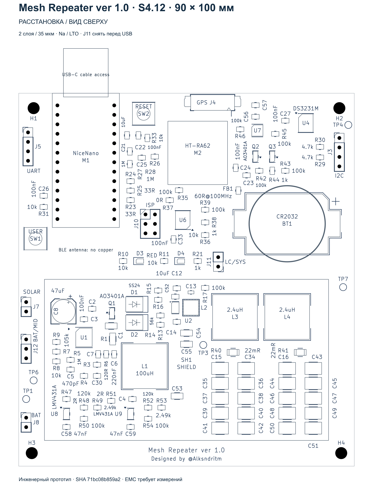
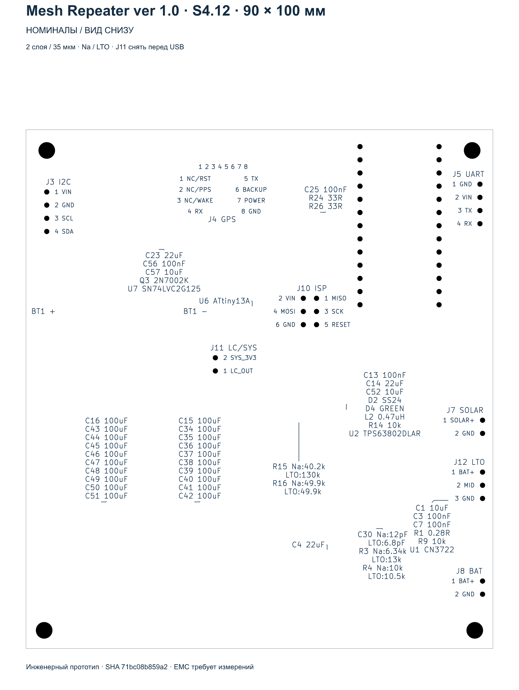
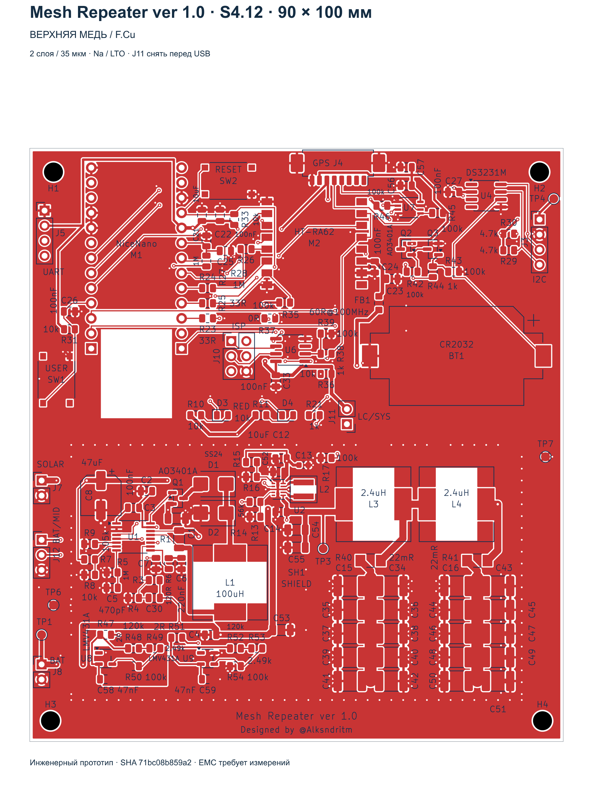
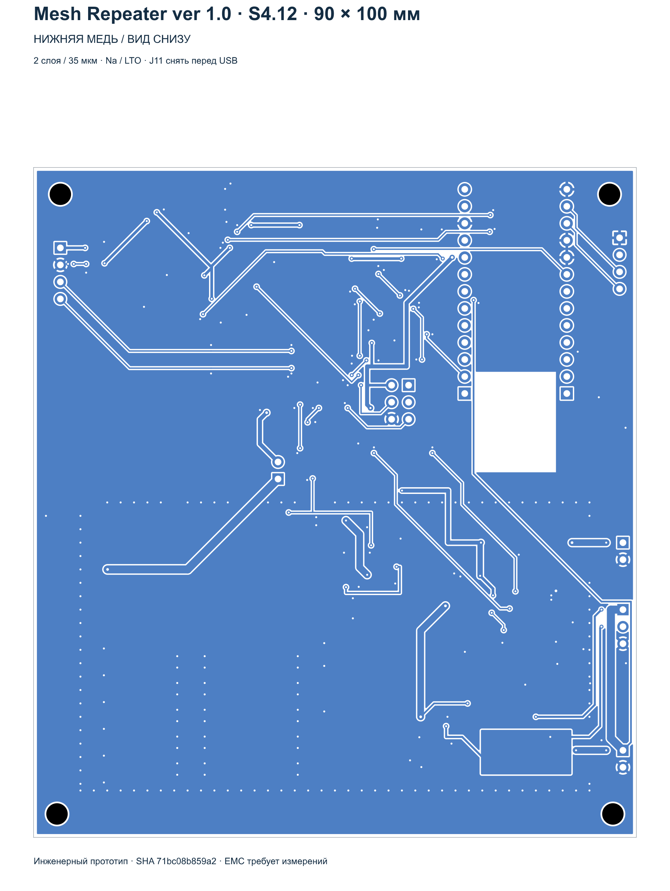

Питание watchdog
Подвод SYS_3V3 приходит на площадку C33.1, от неё идёт короткий отвод к U6.8. Конденсатор остаётся параллельно питанию.
Designed by @Alksndritm · Изменения S4.12 · 10.10.2026
DRC: 0 нарушений · 0 неподключённых цепей · 0 расхождений со схемой. GPIO FakeTec сохранены.
Плата KiCadПроект KiCadСхема PDFВарианты сборки
Подвод SYS_3V3 приходит на площадку C33.1, от неё идёт короткий отвод к U6.8. Конденсатор остаётся параллельно питанию.
Контрольная точка перенесена к разъёму I2C J3; прежняя длинная ветвь удалена.
Держатель CR2032 развёрнут на 180°. Полярность и электрические связи сохранены.
C56 и C57 перенесены ближе к J4 и выровнены в ряд с шагом 3,1 мм. Соединение C56–U7 остаётся коротким. R45 перенесён влево, питающая ветвь укорочена.
BAT-подвод делителя R27/R28 взят отдельной дорожкой непосредственно от J8.1. BAT_ADC сохраняет прежнее подключение GPIO.
Основная дорожка BAT проходит через положительную площадку C53.1. Непрерывность питания сохраняется и без установленного конденсатора.
Na: R15=40,2 кОм, R16=49,9 кОм. LTO 2S: R15=130 кОм, R16=49,9 кОм; резисторы 0,1%. Оба варианта подписаны на B.SilkS у делителя. Типовые пороги LTO: выключение 3,605 В, включение 3,966 В.
На обратной стороне подписаны номера и функции контактов всех восьми разъёмов J3/J4/J5/J7/J8/J10/J11/J12. Маркировка читается при взгляде снизу. Добавлены «Mesh Repeater ver 1.0» и «Designed by @Alksndritm».
Типовой порог EN рассчитывается как VEN·(1+R15/R16), с поправкой на входной ток. При допуске резисторов 0,1%, разбросе EN из даташита и консервативном токе ±200 нА расчётный диапазон выключения LTO — 3,466–3,745 В, без дополнительного температурного дрейфа. Подробности в расчёте. Параметры: Texas Instruments TPS63802.




Пройдено 22 из 22 итоговых условий. Проверены электрические связи схемы, модели и платы; номиналы обоих вариантов; направления дорожек и повороты; короткие подключения C33 и GPS; отдельная ветвь измерения от J8; непрерывный BAT через C53.
ERC: 0 ошибок, одно ранее согласованное предупреждение общей точки FB. Электрическая квалификация на прототипе и описанные ограничения электрической квалификации сохраняются. Производственный пакет для заказа пока не выпущен.
PCB SHA256: 71bc08b859a27f69a8d4f061caf5d2b3182581594e13b1cb2704353220fa1b22